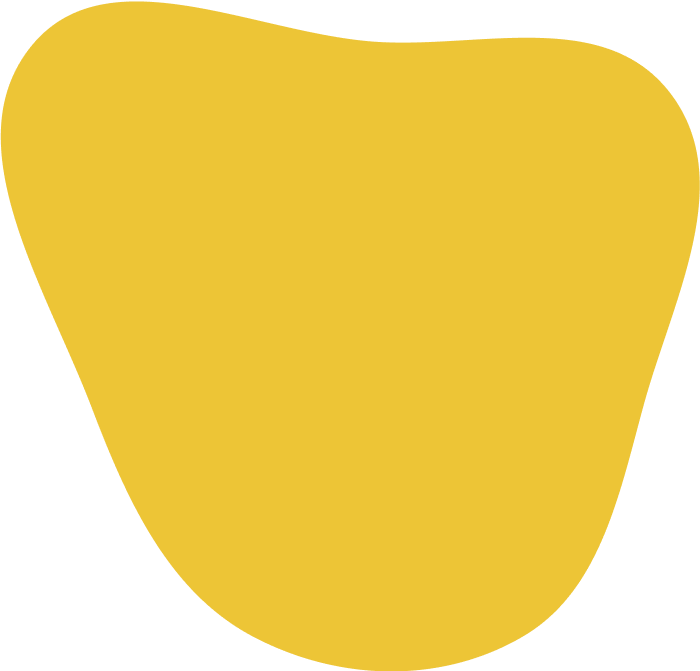

Gabrielle Beus
Nathaly Xavier
Gabriela Monterosso
Desenvolvedoras do site:



Com esse propósito, criamos o 1 A Mais: um espaço para informar, sensibilizar e incentivar a sociedade a enxergar a beleza e o valor de cada indivíduo.
O que é o site 1 A Mais:
O site 1 A Mais surgiu a partir de um projeto científico que desenvolvemos durante as aulas de Projeto Profissional. Tivemos a liberdade de escolher um tema que nos tocasse de forma especial, e decidimos abordar a inclusão e valorização das pessoas com Síndrome de Down. Acreditamos na importância de promover a empatia, o respeito e a conscientização sobre a diversidade.
Como surgiu o site
1 A Mais?
1 A Mais?

Início
Sobre
Sobre
Direitos
Relatos